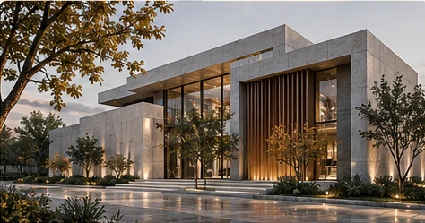

EXTERIOR / VISUALIZATION / 03
Exterior Perspective Development
Architectural perspectives focused on facade character, composition, atmosphere and urban context.

CONCEPTUAL VISUALIZATION / AI-GENERATED FIG. 03
PROJECT OVERVIEW
An exploration in
architectural thinking.
Exterior perspectives and visual presentations developed to communicate facade composition, architectural identity, environmental atmosphere and a strong relationship between building and context.
Architectural characterFaçade and materialsEnvironmental context
VISUAL STUDIES01 — 04
✳ These are fictional AI-generated images created for this portfolio presentation. They are not records of a built or commissioned project.